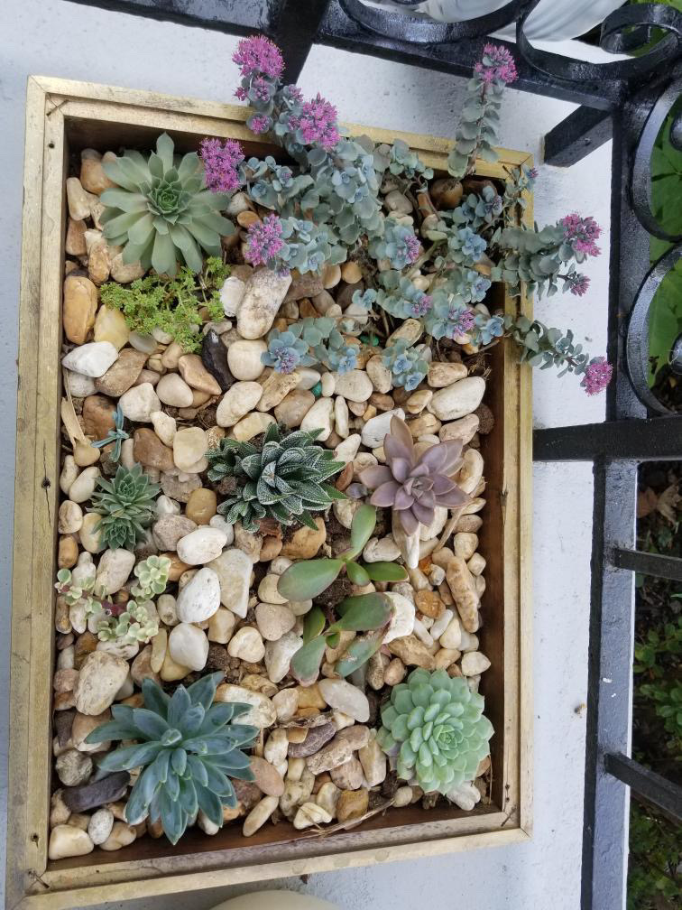

planting
I was raised in a village surrounded by abundant greenery. From a very young age, I developed a love for planting and nurturing plants. Even now, it remains one of my most cherished hobbies.

I was raised in a village surrounded by abundant greenery. From a very young age, I developed a love for planting and nurturing plants. Even now, it remains one of my most cherished hobbies.